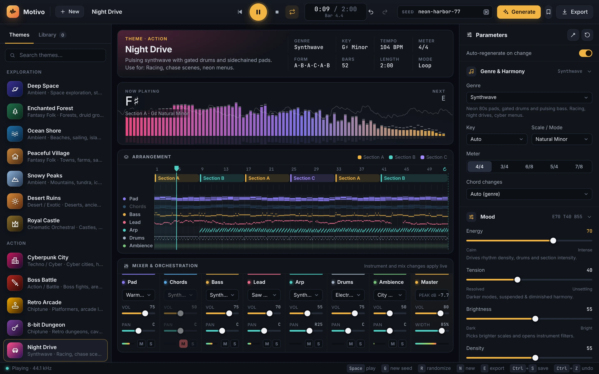
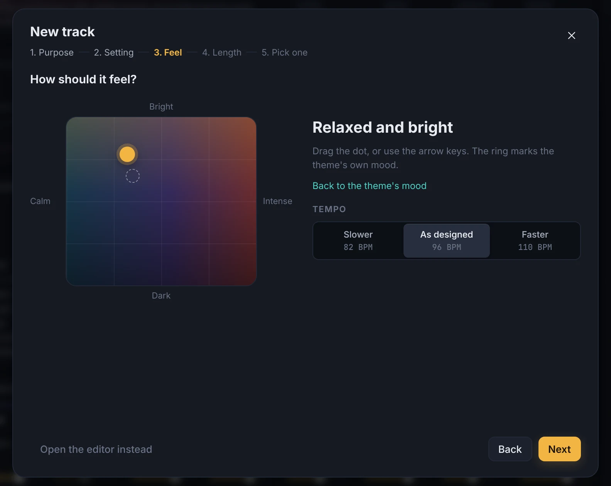
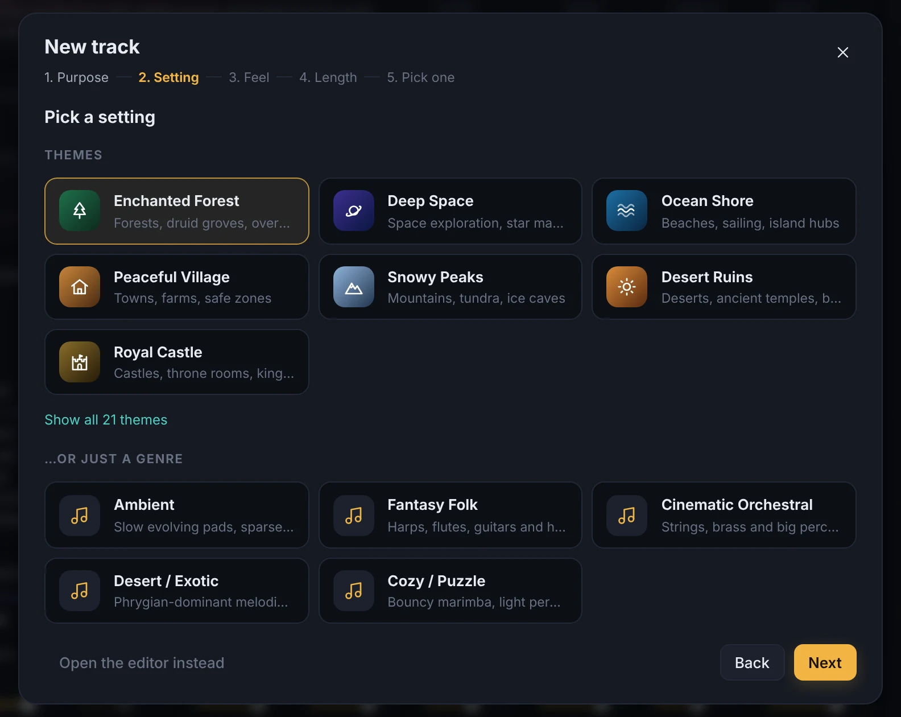
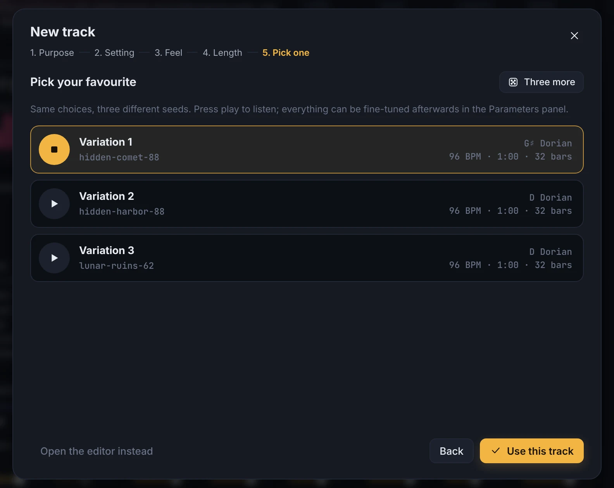
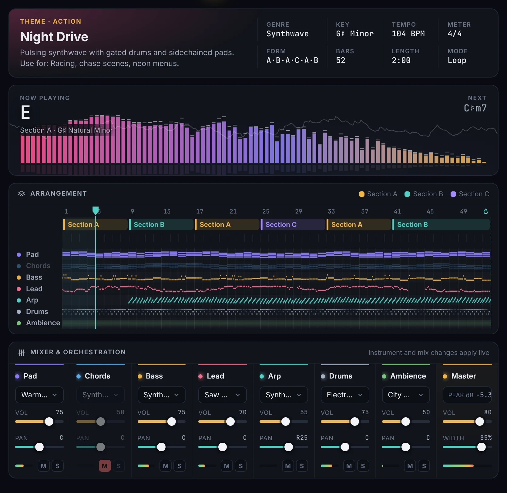
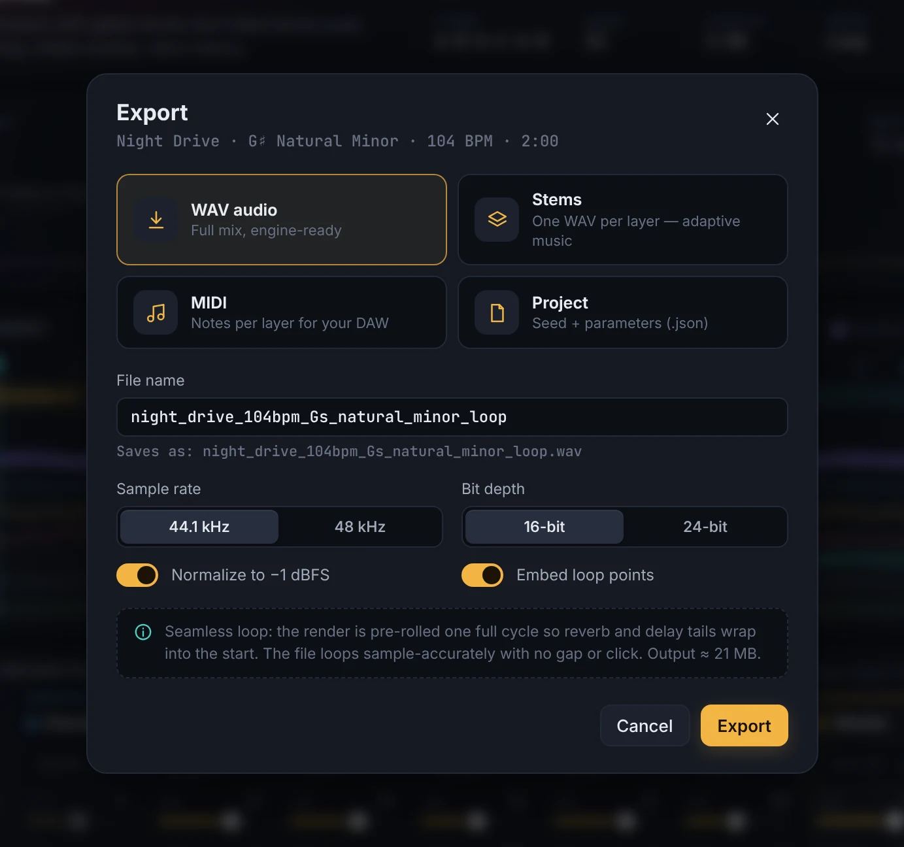

Motivo writes and plays original soundtracks for your game: seamless loops, endlessly evolving tracks, stingers, stems and MIDI. No samples, no AI model, no licensing — just music theory and a seed.

Pick a theme, press play, tweak until it fits. Every change lands on the next bar, so you hear edits, not interruptions.
Loops wrap their reverb tails and carry embedded loop points. Evolving mode keeps varying every cycle for hours of non-repetitive play.
A track is a seed plus its parameters. Save a few bytes of JSON, regenerate the exact same music any time — or roll a new seed for a fresh variation.
Export one WAV per layer that sums back exactly to the mix. Fade drums in for combat, drop the lead in menus — all from one track.
Five questions — purpose, setting, feel, length — then pick your favourite of three variations. Everything stays editable afterwards.
Energy, tension, brightness, form, groove, melody, ambience and effects — every parameter is plain language, with undo for everything.
No samples, no cloud, no AI model. Everything is synthesised locally, so whatever you export is yours to use in any project.
Not sure what "harmonic rhythm" means? You don't need to. Tell Motivo what the music is for and how it should feel; it picks sensible settings and gives you three takes to choose from.



Sections, chord symbols and a mini piano roll per layer, with the current and next chord over a live spectrum. Mute, solo and swap any of 36 instruments while it plays.

WAV with embedded loop points, per-layer stems, multi-track MIDI for your DAW, or a tiny project file that regenerates everything.

Motivo is a rule-based composer. It picks a key and scale from the mood, builds a form and chord progressions from genre templates, writes motifs and grooves, then synthesises every note with the Web Audio API.
Every decision comes from a seeded random generator split per layer, so changing the drums never reshuffles the melody.
// neon-drive.motivo.json — the whole track { "seed": "neon-harbor-77", "style": "synthwave", "mode": "loop", "length": 120, "energy": 70, "tension": 40, "brightness": 55, // …and the rest of the parameters }
The latest release for macOS, Windows and Linux. A single small app, no installer required.
Release builds may not be signed with an Apple Developer ID yet, so Gatekeeper blocks the first launch. To open it anyway:
.dmg and drag Motivo to Applications.Or remove the download quarantine flag in Terminal:
xattr -dr com.apple.quarantine /Applications/Motivo.appMotivo.exe.Motivo uses the Edge WebView2 runtime, already installed on Windows 10 and 11.
Extract and run ./motivo. Motivo needs WebKitGTK and GStreamer for audio:
sudo apt install libwebkit2gtk-4.1-0 gstreamer1.0-plugins-goodChecksums, release notes and older versions are on the releases page. Prefer building it yourself? See the quick start.